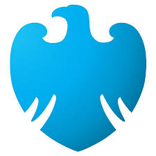

I'm Proud to be an America where at least I know I'm free!
Please don't take that away from me.
Transform with animation (with swing off of page)
Transform - Rock and Flip after 15s

Link
CIT261 Home Page